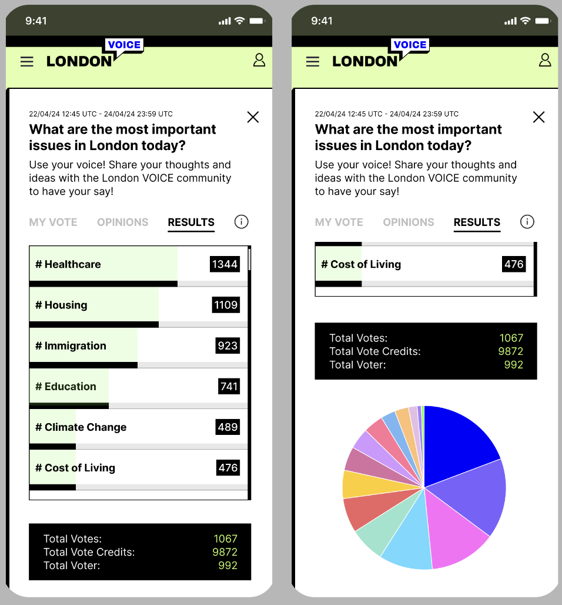
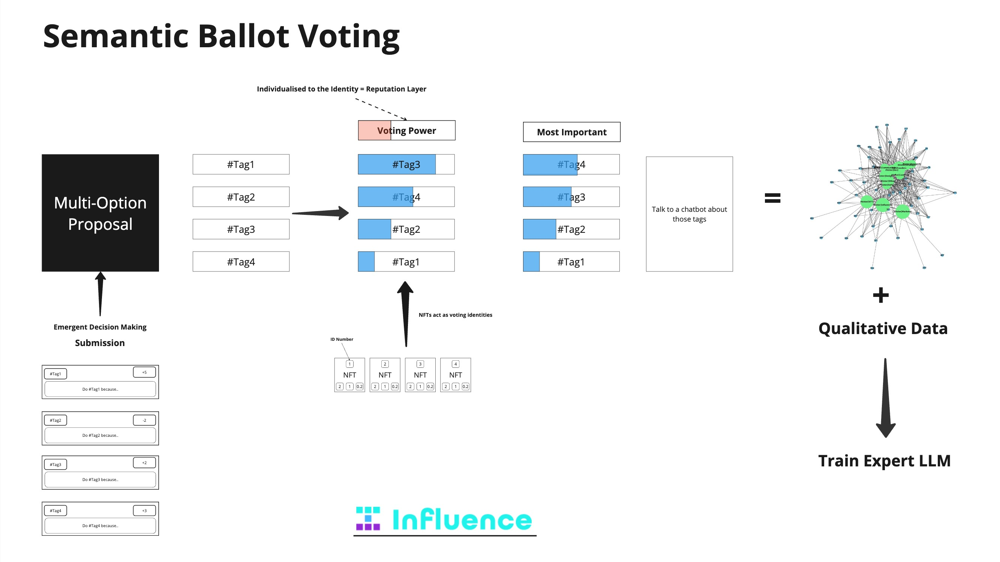
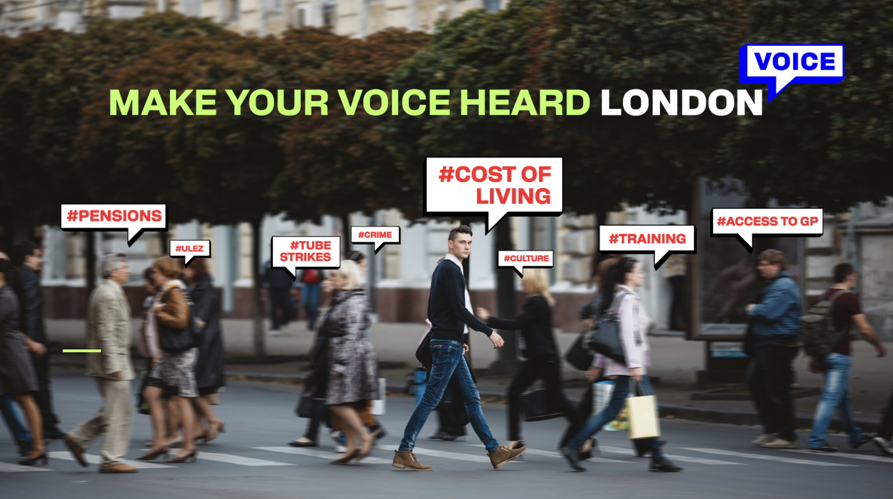
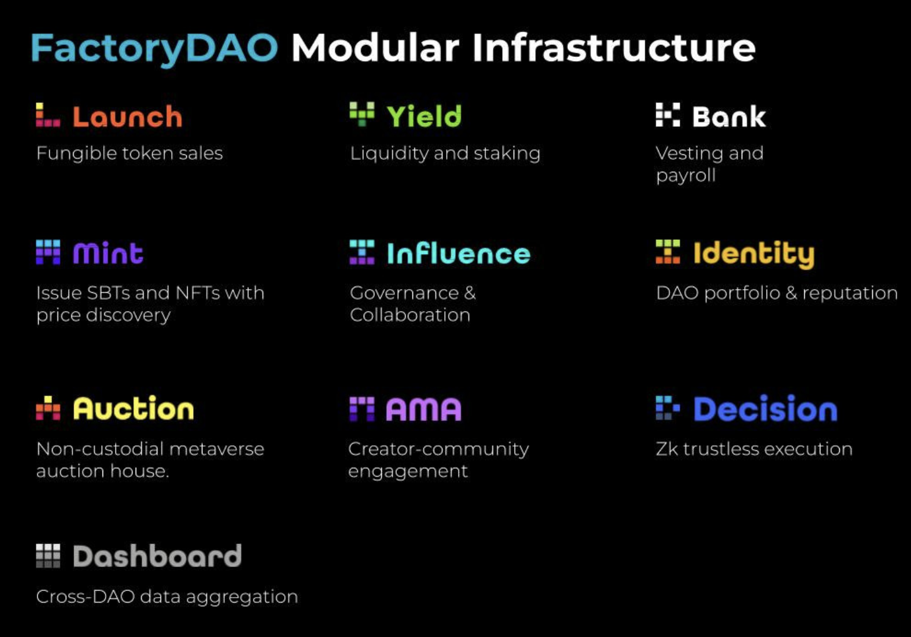

<!-- Title Slide --> <section> <h1 style="font-size: 3em; margin-bottom: 0.5em;">#VOICE</h1> <p style="font-size: 1.4em; margin-bottom: 1em;">An Application for Preference Signaling and Participatory Governance</p> <p style="font-style: italic; font-size: 1.1em; margin-bottom: 2em;">A common good application for community sensemaking and public governance</p> </section> <!-- The Problem --> <section data-background-gradient="linear-gradient(45deg, #b71c1c, #c62828)"> <div style="background: rgba(255,255,255,0.1); padding: 2em; border-radius: 15px; box-shadow: 0 4px 6px rgba(0,0,0,0.1);"> <h2 style="color: #fff; margin-bottom: 0.8em;">The Problem: Governance Today</h2> <ul style="color: #fff; font-size: 1.1em; line-height: 1.6;"> <li style="margin-bottom: 0.8em;">Governance is boring and too complex for all but the most hardcore governerds</li> <li style="margin-bottom: 0.8em;">Communities are left disempowered and decision making is centralised and plutocratic</li> <li>Decision-making lacks systemic alignment with long-term priorities and diverse community voices</li> </ul> </div> </section> <!-- What is #VOICE? --> <section> <div style="display:flex; align-items:center; justify-content:space-between; flex-wrap:wrap;"> <!-- Text Column --> <div style="flex:1; max-width:50%; text-align:left; padding-right:2em;"> <h2>What is #VOICE?</h2> <p style="font-size:0.8em; max-width:100%; margin:auto;">A platform for preference signaling that captures and visualises complex community priorities.</p> <ul style="line-height:1.6; padding-left:1.5em;margin-top:1em;"> <li style="margin-bottom:0.5em;">Uses Semantic Ballot Voting (SBV) to go beyond traditional decision-making</li> <li style="margin-bottom:0.5em;">Generates semantic graphs to uncover hidden consensus</li> <li>Empowers communities to articulate and align priorities</li> </ul> </div> <!-- Image Column --> <div style="flex:1; max-width:40%; text-align:center;">  </div> </div> </section> <!-- How #VOICE Works --> <section> <div style="display:flex; align-items:flex-start; justify-content:space-between; flex-wrap:wrap;"> <div style="flex:1; min-width:300px; max-width:50%; text-align:left; padding: 2em;"> <h2>How #VOICE Works</h2> <ul style="line-height:1.6; padding-left:1.5em;"> <li style="margin-bottom:0.5em;">Participants allocate votes across semantic tags</li> <li style="margin-bottom:0.5em;">Identity based quadratic voting in a token curated registry</li> <li>Quantitative vote data visualises community priorities and qualitative natural language inputs provides context for AI synthesis</li> </ul> </div> <div style="flex:1; min-width:300px; max-width:40%; text-align:center; padding:2em;">  <p style="font-style:italic; margin-top:0.5em;">Visualising values, not just votes</p> </div> </div> </section> <!-- Slide 4: Our Solution --> <section data-background-gradient="linear-gradient(45deg, #1a237e, #311b92)"> <div style="background: rgba(255,255,255,0.1); padding: 2em; border-radius: 15px; box-shadow: 0 4px 6px rgba(0,0,0,0.1);"> <h2 style="color: #fff; margin-bottom: 0.8em;">A DAO Intervention: Negation Voice</h2> <p style="color: #fff; font-size: 1.2em; margin-bottom: 1em;">A dual-tool governance experience:</p> <ul style="color: #fff; font-size: 1.1em; line-height: 1.6;"> <li style="margin-bottom: 0.8em;"><strong style="color: #7c4dff;">#VOICE</strong>: What the community wants, by deliberating preference and meaning</li> <li><strong style="color: #7c4dff;">The Negation Game</strong>: What the community rejects, by challenging beliefs</li> </ul> </div> </section> <!-- Slide 5: What is #VOICE? --> <section data-background-gradient="linear-gradient(45deg, #006064, #00838f)"> <div style="background: rgba(255,255,255,0.1); padding: 2em; border-radius: 15px; box-shadow: 0 4px 6px rgba(0,0,0,0.1);"> <h2 style="color: #fff; margin-bottom: 0.8em;">#VOICE: Governance Built on Preferences</h2> <p style="color: #fff; font-size: 1.2em; margin-bottom: 1em;">#VOICE enables communities to:</p> <ul style="color: #fff; font-size: 1.1em; line-height: 1.6;"> <li style="margin-bottom: 0.8em;">Rank community <strong style="color: #80deea">semantic tags</strong> to signal and discover nuanced priorities</li> <li style="margin-bottom: 0.8em;">Use <strong style="color: #80deea">Quadratic Voting</strong> to balance preference intensity</li> <li>Visualise votes as a <strong style="color: #80deea">preference graph</strong> for actionable insights</li> </ul> </div> </section> <!-- Real World Impact and Onboarding --> <section data-background-gradient="linear-gradient(45deg, #004d40, #00695c)"> <div style="background: rgba(255,255,255,0.1); padding: 2em; border-radius: 15px; box-shadow: 0 4px 6px rgba(0,0,0,0.1);"> <h2 style="color: #fff; margin-bottom: 0.8em;">Real-World Impact and Onboarding</h2> <p style="color: #fff; font-size: 1.2em; margin-bottom: 1em;">By adopting #VOICE, Scroll gains:</p> <ul style="color: #fff; font-size: 1.1em; line-height: 1.6;"> <li style="margin-bottom: 0.8em;"><strong style="color: #80cbc4;">Enhanced Community Engagement:</strong> Meeting community needs is the path to empowermenet and engagement</li> <li style="margin-bottom: 0.8em;"><strong style="color: #80cbc4;">Effective Decision-Making and Community Legitimacy:</strong> Create the raw materials for good decision making and proposal formation</li> <li><strong style="color: #80cbc4;">Scalable Onboarding:</strong> Bring new communities into Scroll with clear, data-driven insights with the potential for synchronous and facilitated community experiences</li> </ul> </div> </section> <!-- Background Image Slide --> <section style="height: 100vh; display: flex; flex-direction: column; align-items: center;"> <h2 style="margin: 20px 0; font-size: 2em; color: white;">A Tool for Empowering Communities</h2> <div style="flex: 1; display: flex; align-items: center; justify-content: center; width: 100%;">  </div> </section> <section> <div style="display:flex; align-items:center; justify-content:space-between; flex-wrap:wrap;"> <div style="flex:1; max-width:50%; text-align:left; padding-right:2em;"> <h2>Empowering Communities</h2> <p style="font-size:0.8em; margin-bottom:1em;">We're building a footprint with real community groups and building the practices to scale adoption of #VOICE in real communities</p> <ul style="line-height:1.6;"> <li style="margin-bottom:0.8em;">A plan for scaling IRL interecntions through city halls and grassroots community groups.</li> <li style="margin-bottom:0.8em;">Real world community groups in Archway and Barking waiting to use it</li> <li style="margin-bottom:0.8em;">The potential for university links and public policy influence</li> </ul> </div> <div style="flex:1; max-width:45%; text-align:center;"> </div> </div> </section> <!-- Why Scroll? --> <section data-background-gradient="linear-gradient(45deg, #1a237e, #311b92)"> <div style="background: rgba(255,255,255,0.1); padding: 2em; border-radius: 15px; box-shadow: 0 4px 6px rgba(0,0,0,0.1);"> <h2 style="color: #fff; margin-bottom: 0.8em;">Why Scroll?</h2> <ul style="color: #fff; font-size: 1.1em; line-height: 1.6;"> <li style="margin-bottom: 0.8em;">A perfect environment to push the boundaries of participatory governance</li> <li style="margin-bottom: 0.8em;">An Ethereum-aligned strategy that touches on deep funding outcomes</li> <li>Support in building foundational governance infrastructure</li> </ul> </div> </section> <!-- Integration and Future Potential --> <section> <div style="display:flex; align-items:center; justify-content:space-between; flex-wrap:wrap;"> <!-- Text Column --> <div style="flex:1; max-width:50%; text-align:left; padding-right:2em;"> <h2>Integration and Future Potential</h2> <ul style="line-height:1.6;"> <li style="margin-bottom:0.5em;">Leave MINT and INFLUENCE integrated into Scroll’s governance stack</li> <li style="margin-bottom:0.5em;">Enable future integration with BANK for token distributions</li> <li>Build a robust ecosystem for participatory and scalable governance</li> </ul> </div> <!-- Image Column --> <div style="flex:1; max-width:40%; text-align:center;">  </div> </div> </section> <!-- Roadmap to Delivery --> <section> <h2>Roadmap to Delivery</h2> <ul style="line-height:1.6; padding-left:1.5em; text-align:left; max-width:60%; margin:auto;"> <li style="margin-bottom:0.5em;"><strong>Phase One:</strong> Build (8 weeks)</li> <li style="margin-bottom:0.5em;"><strong>Phase Two:</strong> Deliver (12 weeks)</li> <li><strong>Phase Three:</strong> Report (4 weeks)</li> </ul> </section> <!-- YOUTUBE Slide --> <section> <h2> The #VOICE App Flow Video</h2> <div style="text-align:center;"> <iframe width="1280" height="720" src="https://www.youtube.com/embed/XSwPnEp8VPw?si=gHyqzmhLMyDyrDsZ" title="YouTube video player" frameborder ="0" allow="accelerometer; autoplay; clipboard-write; encrypted-media; gyroscope; picture-in-picture; web-share" referrerpolicy="strict-origin-when-cross-origin" allowfullscreen></iframe> </div> </section> <!-- The Ask --> <section> <h2>The Ask</h2> <ul style="line-height:1.6; padding-left:1.5em; text-align:left; max-width:60%; margin:auto;"> <li style="margin-bottom:0.5em;">Support for completing development and deployment</li> <li style="margin-bottom:0.5em;">Collaboration in onboarding communities</li> <li>Adopt #VOICE to strengthen Scroll’s governance infrastructure</li> </ul> </section> <!-- Closing --> <section> <h2>#VOICE</h2> <p style="font-size:1.3em;">Shape the future of governance with nuance, depth, and transparency</p> <p style="font-weight:bold; font-size:1.2em;">Join us in building lasting infrastructure for better decisions</p> </section>